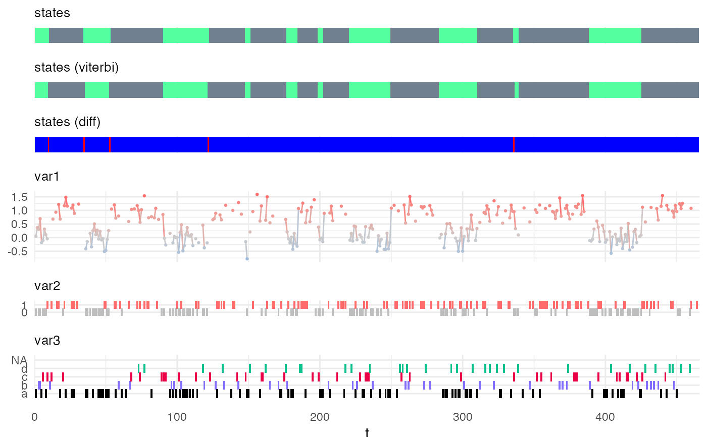
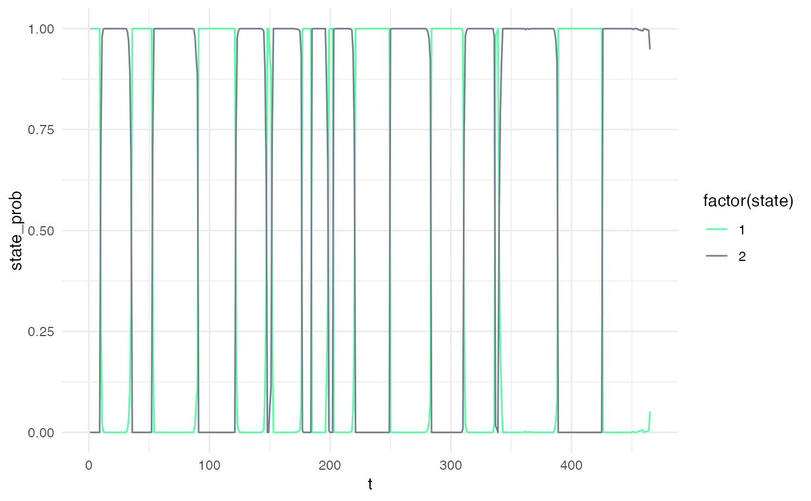

predict_states_hsmm.RdThis function predicts the most likely hidden states from observations.
Two methods are implemented:
"Viterbi" applies the Viterbi algorithm and predicts the most likely sequence of hidden states,
and "FwBw" applies the Forward-Backward algorithm and returns the probability of each state at each time-point.
predict_states_hsmm( model, X, method = "Viterbi", ground_truth = data.frame(), trust_in_ground_truth = 0.75, verbose = FALSE )
| model | a |
|---|---|
| X | a |
| method | a |
| ground_truth | (optional) a |
| trust_in_ground_truth | (optional) a double in [0,1] that indicates the reliability of the provided ground-truth. 1 means "full trust", 0 means "no trust". Default value is 0.75. |
| verbose | logical. Should the function prints additional information? |
Y. Guédon, Estimating Hidden Semi-Markov Chains from Discrete Sequences. Journal of Computational and Graphical Statistics. 12, 604–639 (2003) https://www.tandfonline.com/doi/abs/10.1198/1061860032030
J. O’Connell, S. Hojsgaard, Hidden semi-Markov models for multiple observation sequences: The mhsmm package for R. Journal of Statistical Software. 39, 1–22 (2011) https://www.jstatsoft.org/article/view/v039i04
my_model = simple_model Xsim = simulate_hsmm(my_model, n_state_transitions = 20) # viterbi decoding viterbi = predict_states_hsmm(model = my_model, X = Xsim, method = "Viterbi") Xsim$state_viterbi = viterbi$state_seq$state plot_hsmm_seq(X = Xsim, model = my_model)# forward backward decoding smoothed = predict_states_hsmm(model = my_model, X = Xsim, method = "FwBw") Xsim$state_smoothed = smoothed$state_seq$state plot_hsmm_seq(X = dplyr::select(Xsim, -state_viterbi), model = my_model)library(ggplot2) ggplot( smoothed$probabilities, aes(x = t, y = state_prob, col = factor(state)) ) + geom_line() + scale_color_manual(values = my_model$state_colors)